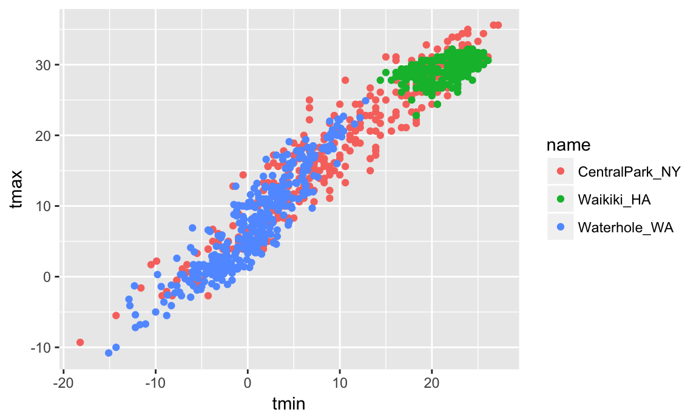
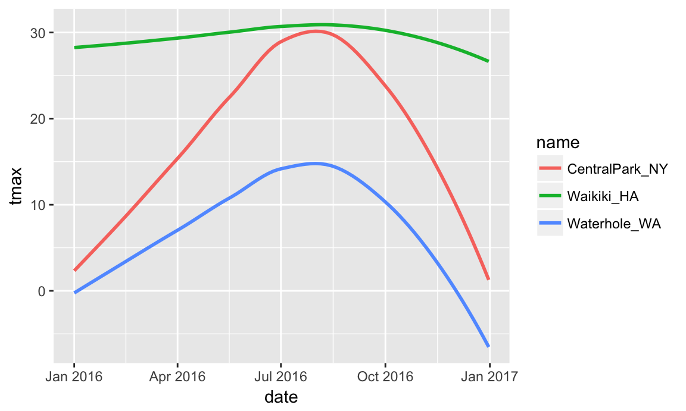
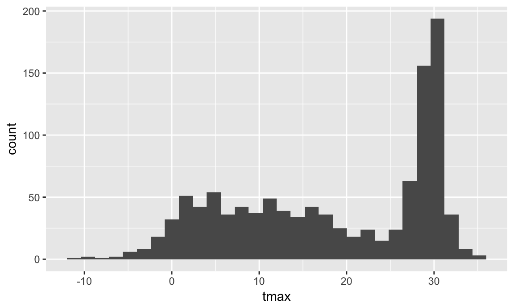
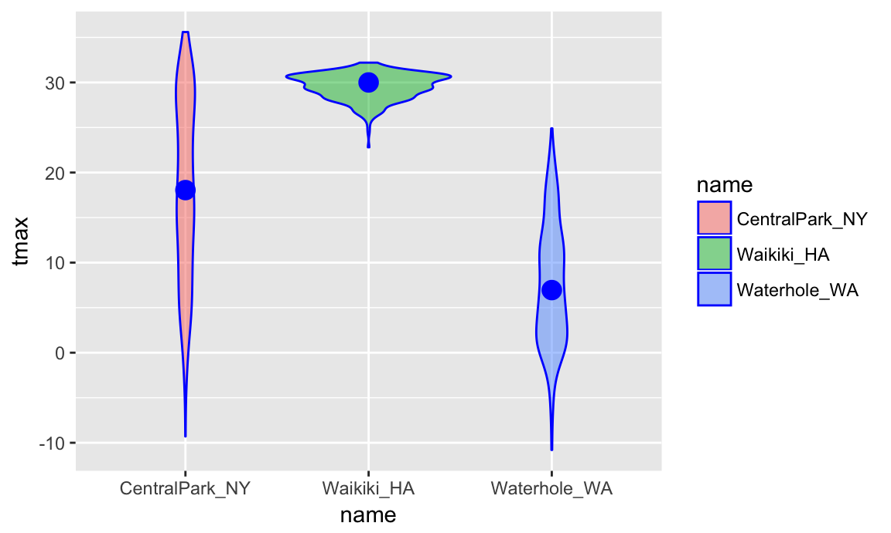
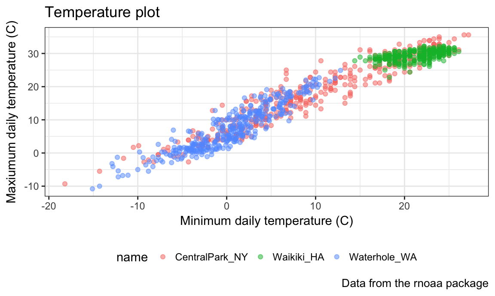
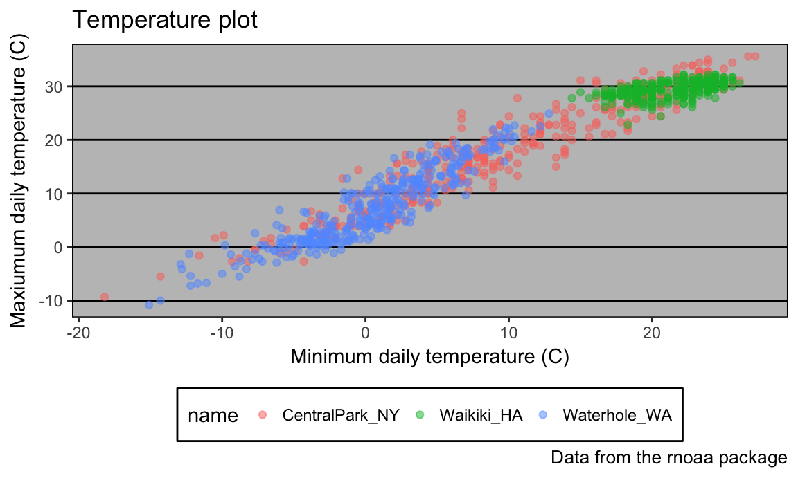

Visualization with ggplot2
Good visualization is a critical step in data analysis.
This is the first module in the Visualization and EDA topic; the relevant slack channel is here.
Example
I’ll start by creating a directory for this topic, adding an R Project, and opening a new R Markdown document for visualizations. I’ll also load the tidyverse package and a couple of others.
library(tidyverse)
## Loading tidyverse: ggplot2
## Loading tidyverse: tibble
## Loading tidyverse: tidyr
## Loading tidyverse: readr
## Loading tidyverse: purrr
## Loading tidyverse: dplyr
## Conflicts with tidy packages ----------------------------------------------
## filter(): dplyr, stats
## lag(): dplyr, stats
library(ggridges)
library(ggthemes)We’ll be working with NOAA weather data, which is downloaded using the rnoaa package in the code chunk below; similar code underlies the weather dataset used elsewhere in the course. Because this process can take some time, I’ll cache the code chunk.
library(rnoaa)
weather =
meteo_pull_monitors(c("USW00094728", "USC00519397", "USS0023B17S"),
var = c("PRCP", "TMIN", "TMAX"),
date_min = "2016-01-01",
date_max = "2016-12-31") %>%
mutate(
name = recode(id, USW00094728 = "CentralPark_NY",
USC00519397 = "Waikiki_HA",
USS0023B17S = "Waterhole_WA"),
tmin = tmin / 10,
tmax = tmax / 10) %>%
select(name, id, everything())
weather
## # A tibble: 1,098 x 6
## name id date prcp tmax tmin
## <chr> <chr> <date> <dbl> <dbl> <dbl>
## 1 CentralPark_NY USW00094728 2016-01-01 0 5.6 1.1
## 2 CentralPark_NY USW00094728 2016-01-02 0 4.4 0.0
## 3 CentralPark_NY USW00094728 2016-01-03 0 7.2 1.7
## 4 CentralPark_NY USW00094728 2016-01-04 0 2.2 -9.9
## 5 CentralPark_NY USW00094728 2016-01-05 0 -1.6 -11.6
## # ... with 1,093 more rowsWe’ll start with a basic scatterplot to develop our understanding of ggplot’s data + mappings + geoms approach, and build quickly from there.
Basic scatterplot
We’ll use the weather data throughout, so we’ll move straight into defining aesthetic mappings. To create a basic scatterplot, we need to map variables to the X and Y coordinate aesthetics:
p = ggplot(weather, aes(x = tmin, y = tmax))
p
Couple of things to notice here. First, I saved the output of ggplot() to an object p and then printed it; later, I’ll be able add to the basic object as needed. I don’t always (or even usually) save the ggplot object, do want to emphasize this behavior.
Second, my “scatterplot” is blank. That’s because I’ve defined the data and the aesthetic mappings, but haven’t added any geoms: ggplot knows what data I want to plot and how I want to map variables, but not what I want to show. Below I add a geom to define my first scatterplot.
p + geom_point()The code below could be used instead to produce the same figure. Using this style can be helpful if you want to do some pre-processing before making your plot but don’t want to save the intermediate data.
weather %>%
ggplot(aes(x = tmin, y = tmax)) +
geom_point()Advanced scatterplot
The basic scatterplot gave some useful information – the variables are related roughly as we’d expect, and there aren’t any obvious outliers to investigate before moving on. We do, however, have other variables to learn about using additional aesthetic mappings.
Let’s start with name, which I can incorporate using the color aesthetic:
ggplot(weather, aes(x = tmin, y = tmax)) +
geom_point(aes(color = name))
Nice! We get colors and have a handly legend. Maybe next I’ll add a smooth curve and make the data points a bit transparent.
ggplot(weather, aes(x = tmin, y = tmax)) +
geom_point(aes(color = name), alpha = .5) +
geom_smooth(se = FALSE)
## `geom_smooth()` using method = 'gam'Neat! The curve gives a sense of the relationship between variables, and the transparency shows where data are overlapping. I can’t help but notice, though, that the smooth curve is for all the data but the colors are only for the scatterplot. Turns out that this is due to where I defined the mappings. The X and Y mappings apply to the whole graphic, but color is currently geom-specific. Sometimes you want or need to do this, but for now I don’t like it. If I’m honest, I’m also having a hard time seeing everything on one plot, so I’m going to add facet based on name as well.
ggplot(weather, aes(x = tmin, y = tmax, color = name)) +
geom_point(alpha = .5) +
geom_smooth(se = FALSE) +
facet_grid(. ~ name)
## `geom_smooth()` using method = 'loess'Awesome! I’ve learned a lot about these data. However, the relationship between minimum and maximum temperature is now kinda boring, so I’d prefer something that shows the time of year. Also I want to learn about precipitation, so let’s do that.
ggplot(weather, aes(x = date, y = tmax, color = name)) +
geom_point(aes(size = prcp), alpha = .5) +
geom_smooth(se = FALSE) +
facet_grid(. ~ name)
## `geom_smooth()` using method = 'loess'
## Warning: Removed 2 rows containing missing values (geom_point).Way more interesting! You get a whole range of temperatures in Central Park (sometimes it’s maybe too hot); it’s more temperate near Seattle but it rains all the time; and Waikiki is great except for that one (relatively) cold, rainy day last summer.
Learning Assessment: Write a code chain that starts with weather data; focuses only on Waikiki, converts temperatures to Fahrenheit, makes a scatterplot of min vs. max temperature, and overlays a linear regression line (using options in geom_smooth()).
Tips and tricks
There are lots of ways you can mix and match elements, depending on your goals. I don’t like the following plot as much (it doesn’t show the data and omits precipitation), but it illustrates that you have lots of freedom in determining which geoms to include and how to compare your groups. If nothing else, you should be starting to get a sense for why you create way more plots for yourself than for others.
ggplot(weather, aes(x = date, y = tmax, color = name)) +
geom_smooth(se = FALSE)
## `geom_smooth()` using method = 'loess'
When you’re making a scatterplot with lots of data, there’s a limit to how much you can avoid overplotting using alpha levels and transparency. In these cases geom_hex(), geom_bin2d(), or geom_density2d() can be handy:
ggplot(weather, aes(x = tmax, y = tmin)) +
geom_hex()There are lots of aesthetics, and these depend to some extent on the geom – color worked for both geom_point() and geom_smooth(), but shape only applies to points. The help page for each geom includes a list of understood aesthetics.
Learning Assessment: In the preceding, we set the alpha aesthetic “by hand” instead of mapping it to a variable. This is possible for other aesthetics too. To check your understanding of this point, try to explain why the two lines below don’t produce the same result:
ggplot(weather) + geom_point(aes(x = tmax, y = tmin), color = "blue")
ggplot(weather) + geom_point(aes(x = tmax, y = tmin, color = "blue"))Univariate plots
Scatterplots are great, but sometimes you need to carefully understand the distribution of single variables – we’ll tackle that now. This is primarily an issue of learning some new geoms and, where necessary, some new aesthetics.
First up is the histogram.
ggplot(weather, aes(x = tmax)) +
geom_histogram()
## `stat_bin()` using `bins = 30`. Pick better value with `binwidth`.
You can play around with things like the bin width and set the fill color using an aesthetic mapping.
ggplot(weather, aes(x = tmax, fill = name)) +
geom_histogram(position = "dodge", binwidth = 2)The position = "dodge" places the bars for each group side-by-side, but this gets sort of hard to understand. I often prefer density plots in place of histograms.
ggplot(weather, aes(x = tmax, fill = name)) +
geom_density(alpha = .4, adjust = .5, color = "blue")The adjust parameter in density plots is similar to the binwidth parameter in histograms, and it helps to try a few values. I set the transparency level to .4 to make sure all densities appear. You should also note the distinction between fill and color aesthetics here. Lastly, you could facet by name as above but would have to ask if that makes comparisons easier or harder.
Histograms and densities are one way of investigating univariate distributions; boxplots are another.
ggplot(weather, aes(x = name, y = tmax)) + geom_boxplot()I kinda like violin plots over boxplots, personally.
ggplot(weather, aes(x = name, y = tmax)) +
geom_violin(aes(fill = name), color = "blue", alpha = .5) +
stat_summary(fun.y = median, geom = "point", color = "blue", size = 4)
Both boxplots and violin plots are currently getting knocked out by ridge plots (in the ggridges package), though, especially if you have lots of categories!
ggplot(weather, aes(x = tmax, y = name)) +
geom_density_ridges(scale = .85)
## Picking joint bandwidth of 1.68Learning Assessment: Make plots that compare precipitation across locations. Try a histogram, a density plot, a boxplot, a violin plot, and a ridgeplot; use aesthetic mappings to make your figure readable.
Themes, legends, etc.
There are a variety of useful ways to change the appearance of your plot, especially if your graphic is intended to be viewed by others. Some of the most important are the axis labels, title, and caption, all of which can be controlled using labs().
ggplot(weather, aes(x = tmin, y = tmax)) +
geom_point(aes(color = name), alpha = .5) +
labs(
title = "Temperature plot",
x = "Minimum daily temperature (C)",
y = "Maxiumum daily temperature (C)",
caption = "Data from the rnoaa package"
)
Another that I frequently change is the legend position; by default this is on the right of the graphic, but I often shift it to the bottom to ensure the graphic takes up the available left-to-right space.
ggplot(weather, aes(x = tmin, y = tmax)) +
geom_point(aes(color = name), alpha = .5) +
labs(
title = "Temperature plot",
x = "Minimum daily temperature (C)",
y = "Maxiumum daily temperature (C)",
caption = "Data from the rnoaa package"
) +
theme(legend.position = "bottom")
While we’re on the subject, you can change the default theme (which is theme_gray) to something else. Here’s theme_bw():
ggplot(weather, aes(x = tmin, y = tmax)) +
geom_point(aes(color = name), alpha = .5) +
labs(
title = "Temperature plot",
x = "Minimum daily temperature (C)",
y = "Maxiumum daily temperature (C)",
caption = "Data from the rnoaa package"
) +
theme_bw() +
theme(legend.position = "bottom")
… and here’s theme_classic():
ggplot(weather, aes(x = tmin, y = tmax)) +
geom_point(aes(color = name), alpha = .5) +
labs(
title = "Temperature plot",
x = "Minimum daily temperature (C)",
y = "Maxiumum daily temperature (C)",
caption = "Data from the rnoaa package"
) +
theme_classic() +
theme(legend.position = "bottom")… and, for some reason, here’s the Excel 2003 theme from ggthemes:
ggplot(weather, aes(x = tmin, y = tmax)) +
geom_point(aes(color = name), alpha = .5) +
labs(
title = "Temperature plot",
x = "Minimum daily temperature (C)",
y = "Maxiumum daily temperature (C)",
caption = "Data from the rnoaa package"
) +
ggthemes::theme_excel() +
theme(legend.position = "bottom")
Don’t use the Excel 2003 theme (the first two are fine, and ggthemes has other very nice themes as well).
The behavior of your plot depends on the data you’ve supplied; in some cases, it’s easier to control behavior through data manipulation than it is through the plot code. This is particularly true for the order of categorical or factor variables. Categorical variables will be ordered alphabetically; factors will be follow the specified order level. You can change the order level of a factor variable to your specified preference using forcats::fct_relevel or according to the value of another variable using forcats::fct_reorder.
weather %>%
mutate(name = forcats::fct_relevel(name, c("Waikiki_HA", "CentralPark_NY", "Waterhole_WA"))) %>%
ggplot(aes(x = name, y = tmax)) +
geom_violin(aes(fill = name), color = "blue", alpha = .5) +
stat_summary(fun.y = median, geom = "point", color = "blue", size = 4) +
theme(legend.position = "bottom")weather %>%
mutate(name = forcats::fct_reorder(name, tmax)) %>%
ggplot(aes(x = name, y = tmax)) +
geom_violin(aes(fill = name), color = "blue", alpha = .5) +
stat_summary(fun.y = median, geom = "point", color = "blue", size = 4) +
theme(legend.position = "bottom")We’ll learn more about the forcats package in Data Wrangling II.
Learning Assessment: Revisit to density plot you made comparing precipitation across locations. Use themes and labels to improve the readability of this plot.
Saving and embedding plots
You will, on occasion, need to save a plot to a specific file. Don’t use the built-in “Export” button! If you do, your figure is not reproducible – no one will know how your plot was exported. Instead, use ggsave() by explicitly creating the figure and exporting; ggsave will guess the file type you prefer and has options for specifying features of the plot.
p = ggplot(weather, aes(x = tmin, y = tmax)) +
geom_point(aes(color = name), alpha = .5) +
labs(
title = "Temperature plot",
x = "Minimum daily temperature (C)",
y = "Maxiumum daily temperature (C)",
caption = "Data from the rnoaa package"
) +
theme_bw() +
theme(legend.position = "bottom")
ggsave("weather_plot.pdf", p, width = 8, height = 5)Embedding plots in an R Markdown document can also take a while to get used to, because there are several things to adjust. First is the size of the figure created by R, which is controlled using two of the three chunk options fig.width, fig.height, and fig.asp. I prefer a common width and plots that are a little wider than they are tall, so I set options to fig.width = 6 and fig.asp = .6. Second is the size of the figure inserted into your document, which is controlled using out.width or out.height. I like to have a little padding around the sides of my figures, so I set out.width = "90%". I do all this by including the following in a code snippet at the outset of my R Markdown documents.
knitr::opts_chunk$set(
fig.width = 6,
fig.asp = .6,
out.width = "90%"
)What makes embedding figures difficult at first is that things like the font and point size in the figures generated by R are constant – that is, they don’t scale with the overall size of the figure. As a result, text in a figure with width 12 will look smaller than text in a figure with width 6 after both have been embedded in a document. As an example, the code chunk below has set fig.width = 12.
ggplot(weather, aes(x = tmin, y = tmax)) +
geom_point(aes(color = name))Usually you can get by with setting reasonable defaults, but keep a careful eye on figures you intend to show others – everything should be legible!
Learning Assessment: Set global options for your figure sizes, and re-knit your document. What happens when you change fig.asp? What about out.width?
Other materials
Oh man is there a lot of stuff about visualization …
- There are overviews on good and bad graphics
- Including an early paper on “How to display data badly”
- Karl Broman’s top ten worst graphs
- … and Karl’s talk on creating effective figures and table
- Also Hadley Wickham’s paper on the philosophy underlying
ggplot
- There are tutorials on making graphics using
ggplot- From R for Data Science: basics and advanced stuff
- Jenny Bryan’s intro to ggplot and her ggplot tutorial (with a video presentation of the ggplot2 tutorial slides)
- From R Programming for Research
- The Graphs chapter in the R Cookbook by Winston Chang
- … and his R Graphics Cookbook
- And, of course, a cheatsheet
- There are arguments about ggplot vs base R graphics
The code that I produced working examples in lecture is here.